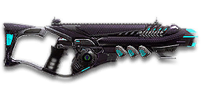

Sage Guide · Vanu Sovereignty · Combat Medic
A 1,000-cert Vanu assault rifle for the Combat Medic — and for Engineers and Heavy Assaults with the ASP unlock. The fastest bullets and the gentlest recoil of any starter-class rifle, if you fight at its range and burst in fives.
The one-line verdict: the accurate one. It rewards good aim and short bursts, and punishes spray-and-pray. Fight between 11 and 65 metres, burst in fives, and it will out-shoot guns that look stronger on paper.

The CME · Vanu Sovereignty · 30-round magazine
Picture the scene, because you've probably lived it: you're sprinting across a courtyard, an enemy appears, and you do everything at once — hold the trigger down while you're still running, then press aim-down-sights (ADS) a split-second later, finger still down. The sight picture snaps in, it looks precise… and your bullets spray everywhere except the man in your crosshair. He kills you. It feels like the game cheated. It didn't — here's what actually happened.
Read it left to right: sprint, aim mid-hold, miss. The sight picture lies — the cone of fire underneath it does not reset.
One beat at a time. Each beat is short — together they take about half a second, and half a second of patience beats half a magazine of misses.
You started firing from a sprint, from the hip. Sprinting is the least accurate state in the game: your cone of fire starts at 7.0° — fully bloomed, the widest it can ever be. Every shot you fire from the hip widens it further still (+0.1° per shot).
Then you pressed ADS mid-hold — and nothing reset. Aiming down sights does not shrink a cone of fire that is already bloomed. The scope only gives you a precise picture; the bullets keep flying out of the wide cone you built while running and hipfiring. That's the whole mystery: accurate-looking aim, wildly inaccurate gun.
Two timers stack the deck further: your gun needs about 0.3 s to settle after a sprint, and raising the sight itself takes ~0.15 s. Trigger held through all of it means your first half-second of fire is pure confetti.
1 · Feet. Let go of sprint (and the trigger, if you're already holding it). Stop, or drop into a strafe — anything but a full sprint.
2 · Sight. Press ADS and let the sight come up. This takes a heartbeat — that's fine, half a second of patience beats half a magazine of misses.
3 · Trigger. Now fire. Starting from the aimed cone of 0.1°, your first shots land where the dot points, and you control the bloom from zero instead of inheriting a maxed-out cone.
Stop → aim → fire. If you take one habit from this entire page, take this one. You'll practise exactly this rhythm in the simulator in section 04.
Every enemy infantry has 1,000 health (500 shield + 500 health). Your bullet does 143 damage up close, fading gently to 125 at long range — the gentlest falloff of any starter-class rifle, with only one damage step. Headshots count double, leg shots count less (×0.9). That gives you three numbers worth memorising:
| Range | Damage | Head | Chest | Legs | Chest vs shielded Heavy |
|---|---|---|---|---|---|
| Close · 0–10 m | 143 | 4 | 7 | 8 | 11 |
| Mid · 10–65 m | 143→125 | 4 | 8 | 9 | 12 |
| Far · 65 m+ | 125 | 4 | 8 | 9 | 12 |
Perfect-accuracy times to kill: 4 headshots ≈ 0.28 s, 7 chest shots ≈ 0.55 s up close. In real fights you'll land maybe half your rounds — still, this is why the head matters so much on this gun. Note the mid band: even at 47 m your bullet still does about 131 damage, so the chest kill only rises from 7 shots to 8.
Full power to 10 m, then a steady slide to minimum at 65 m. The gold line shows High Velocity Ammunition, which stretches minimum damage out to 85 m (full power only reaches 8 m with it).
One gun, four fighting styles. The right technique changes with distance — use the range finder below to see what your bullets do at any range, then learn the four bands underneath it.
How to fight hereAim down sights at the upper chest and neck. Fire in bursts of 5 — your recoil climbs straight up into the head for free damage.
Aim: centre of the chest, from the hip. Keep moving.
Scoping in costs you time and halves your move speed — at arm's length that gets you killed. Your moving hipfire spread is only about 0.35 m wide at 8 m, so most rounds land on a torso. Strafe side to side (A/D) while firing so you're hard to track.
Aim: neck / upper chest. Bursts of 5–8 rounds.
This is where the gun earns its keep: near-full 143 damage, the gentlest recoil of any rifle here, and bullets so fast (670 m/s) you barely need to lead a target. Start your crosshair at the neck — the natural straight-up climb walks your shots into the head, and 4 head hits end the fight in under a third of a second. Strafe while scoped; you're slower, but a moving target still beats a still one.
Aim: chest. Bursts of 5 rounds, pause between them.
Damage is sliding toward 125 and your cone of fire blooms if you hold the trigger. Fire a burst, release for a split second to let accuracy reset, fire again. The recoil climbs straight up (0° angle — no sideways drift at all), so pull your mouse gently straight down. Crouch or stand still when you can — both tighten your shots.
Aim: chest. Taps of 3–5 rounds at exposed targets only.
At 125 damage you need 8 chest hits — a long, loud advertisement of your position. But your bullets are still the fastest here, so leading a target is easy. Take these shots at stationary or fleeing targets, medics reviving, and engineers on turrets. Otherwise, your better play is to close the distance behind cover. Knowing when not to shoot is a skill too.
Your accuracy is decided by two things before skill even enters it: what your body is doing (your stance sets the starting cone of fire) and what your finger is doing (holding the trigger grows that cone with every shot). The CME has no fire-mode switch — full-auto only — so "firing modes" are something you do with your finger, not a setting on the gun.
| Stance | Starting cone | What it means for you |
|---|---|---|
| Sprinting | 7.0° | Maxed out — the widest the cone can be. This is the section 01 disaster: never start firing from a sprint. |
| Hipfire, moving | 2.5° | Walking or strafing from the hip. Fine inside ~11 m, leaks rounds past the target beyond it. |
| Hipfire, standing | 2.0° | Your point-blank default. The 0.28 m ring at 8 m in section 05 is this stance drawn out. |
| Hipfire, crouched | 1.5° | The tightest hipfire you have (2.0° if you crouch-walk). Crouch when holding a doorway from the hip. |
| Aimed (ADS), feet planted | 0.1° | Standing or crouched makes no difference here — twenty times tighter than hipfire. This is why section 01's order matters. |
| Aimed (ADS), strafing | 0.25° | The moving floor while scoped — still forty times tighter than sprinting, but you move at half speed (0.5×). Strafe between bursts to stay hard to hit; plant your feet during each burst. |
| Mode | How your finger does it | Use it at |
|---|---|---|
| The mag dump | Hold the trigger and don't let go | Point blank only, or suppressing a doorway. Bloom maxes out fast — past ~8 rounds you're spraying, not aiming, and your 30-round magazine is gone in under 3 seconds. |
| Bursts — the default | Hold for 5 rounds, release ~0.15 s, hold again. 6–8 rounds is fine while you're learning | Almost everything, 11–65 m. Each release resets the cone, so every burst starts at 0.1°. |
| Tap-fire | Short taps of 3–5, or single clicks, with a real pause between | 65 m and out, at exposed or stationary targets. Slow, but every round goes where the dot is. |
A target 30 m away, aiming down sights. Press and hold FIRE (mouse, touch, or hold Space with the button focused) and watch the holes walk wider the longer you hold — that's firing from an ever-growing cone. Release, let the cone reset, fire again. Aim for bursts of 5; 6–8 is tolerable while you're new. This practice window is shared by the whole Sage series: it's driven by a weapon profile plugged into the window — here the CME's (652 RPM, 0.1° starting cone, 0.05° bloom per shot, target at 30 m) — and the spread is drawn at true scale from those numbers.
Cone of fire — fills as you hold, empties when you release.
Your bursts will be graded here — green at 5 rounds, tolerable up to 8.
Some things are easier to show than to say. Here's what your bullets actually do: how wide hipfire spreads at 8 metres, what a good burst rhythm looks like, and what the 2x sight really changes. The hands-on version — holding the trigger yourself — is the practice window in section 04.
A full-size target 8 m away — an arm's-length room fight. The rings show where hipfire rounds land around your aim point (the chest). Sizes are drawn to scale from the gun's real cone-of-fire numbers.
Read it this way: even moving, the 0.35 m ring fits well inside the chest at 8 m — most rounds hit a target this size, which is why hipfire works point-blank. The moving ring only grows to 0.5 m — about torso width — at ~11 m, and the rings only grow with distance while the man doesn't. Past ~11 m that's rounds missing entirely: the exact moment to switch to aiming down sights, where the spread shrinks to a dot. (Ring sizes use the real geometry: spread diameter = 2 × distance × tan(cone ÷ 2).)
Every shot widens your cone of fire ("bloom"). Releasing the trigger for a heartbeat resets it. Same 18 rounds, two very different outcomes:
The target pattern is bursts of about 5 rounds — that's the ideal. Bursts of 6–8 are fine while you're new (call it newbie tolerance). Past that, the bloom (0.05° per shot aimed, 0.10° from the hip) keeps growing with every shot, so the extra bullets mostly decorate the wall behind your enemy instead of hitting him. Short bursts also leave you rounds for the second enemy — remember, the magazine is only 30.
No zoom. The target at 35 m is small but the view is wide open — you see the crate, the tower, and the next enemy coming. Fast to aim, nothing blocks your edges. Best inside ~30 m.
Same target, same 35 m — but he looks twice as tall, so placing shots on his chest and head gets much easier. The price: your view narrows to the round window, the crate and tower are gone, and close targets feel fast and huge. Best at 25–65 m.
That's the whole 30-cert decision from section 06 in one picture: 1x for awareness, 2x for precision. Most veterans carry both and swap per base — indoors 1x, open ground 2x.
One honest warning first: unlike the starter rifles, which arrive with a 1x sight and a Forward Grip already fitted, the CME arrives bare — iron sights, empty barrel, empty rail. Your first 230 certs after buying the gun go on a sight, a grip, and better ammo. Everything below is judged on that basis: what fixes a real gap, and what is a sidegrade you can skip.
The plain post-and-notch sights the gun ships with. Usable, but the front post covers a lot of the target at range.
Good: your first few fights while you earn the 30 certs for a real sight.
Bad: anything past 30 m — the post hides the head you're trying to hit.
A clean dot-and-circle sight with no zoom. The standard Vanu 1x reflex sight — and the one this guide is built around.
Good: everywhere indoors and out to ~30 m — which is most PlanetSide fights.
Bad: picking out targets past 50 m; that's what the 2x is for.
Doubles your view magnification. Costs almost nothing — the price of a few kills.
Good: open-field bases, tower fights, and your 25–65 m burst game. Swap between 1x and 2x per fight.
Bad: tight indoor rooms — the zoom makes close targets feel fast and huge.
Night-vision sight: enemies glow white against a dark view, and it sees through smoke.
Good: night fights, smoky doorways, spotting infiltrators by their outline.
Bad: daytime and long range — its view is short-ranged and washes out in bright light.
The Vanu Marksman's Scope (chevron) and the V3 Holo (red dot) — proper mid-range magnification for a rifle built for range.
Good: holding a lane at 50–65 m, where the 2x still leaves heads small. This is the one rifle where a 3.4x is a real option.
Bad: any fight inside 25 m, which is where you'll spend your first hundred hours.
Sniper-style magnification on an automatic rifle. The crosshair is clean, but the tunnel vision is real.
Good: almost nothing a beginner does — recoil magnifies too, and you lose all awareness of your flanks.
Bad: any fight inside 40 m, and any fight where someone can walk up beside you.
A sniper scope on an assault rifle. Six times magnification, mil-dot reticle, and a view like looking through a straw.
Good: nothing on this gun — if you want 6x, bring a sniper rifle.
Bad: everything a new player does. Buy it never, or last.
The CME's recoil is already the gentlest of any rifle on this page. Plenty of veterans run this slot empty forever.
Good: your first weeks. Spend certs on your sight and grip first.
Bad: nothing — there's no downside to an empty slot.
Cuts vertical recoil by 30% (0.2° → 0.14° per shot). Costs you: hipfire spread grows 15%, and enemies see you on the minimap from 35 m farther away when you fire.
Good: if even the CME's gentle climb bothers you at 50 m+.
Bad: most players — the climb is already tiny, so you pay the hipfire and minimap costs for a fix you barely feel.
Your shots bloom 20% slower while aiming (0.05° → 0.04° per shot) — longer accurate bursts at range. But you move 20% slower while scoped (0.5× → 0.4×).
Good: holding a lane or doorway at 30–65 m, firing from a steady position — exactly the CME's home turf.
Bad: aggressive room-clearing — the slower scoped strafe makes you an easier target.
You vanish from the minimap when firing and your shots are quiet. In exchange, damage starts dropping off 20 m sooner (minimum damage at 45 m instead of 65 m) and bullets fly 15% slower (670 → 570 m/s).
Good: flanking behind enemy lines, rooftop and tree work, solo play behind the front.
Bad: front-line fighting where everyone already knows where you are — you pay the damage cost for stealth you don't need, and you blunt the gun's best feature: its range.
Cuts side-to-side recoil by 25% (0.18° → 0.14°), keeping your bursts on a single target. Tiny cost: weapon swap is 0.15 s slower (0.65 s → 0.80 s).
Good: the default for aimed, mid-to-long-range play — the starter rifles get this free; on the CME you have to buy it, and it's worth every cert.
Bad: nothing meaningful. It only stops helping if you never aim down sights.
Hipfire accuracy improves by a third (33% tighter cone: 2.5° → 1.68° moving). Replaces the Forward Grip — you can't have both.
Good: indoor point-holds and stairwell fights where you hipfire inside 11 m.
Bad: open bases — you give up aimed recoil control for a bonus you rarely use.
The first shot of each burst kicks 60% less (0.4° → 0.16°) — but side-to-side recoil rises 10% on everything after it.
Good: disciplined burst and tap-fire at 40 m+, where every burst starts fresh.
Bad: beginners' longer bursts — the CME's first-shot kick is already gentle, so the trade rarely pays early.
A torch whose beam reveals cloaked infiltrators. Toggle it with the attachment key (X by default).
Good: hunting a stalker infiltrator camping your capture point — sweep corners with it.
Bad: as your everyday rail — it gives zero accuracy help, and the beam advertises your position.
Bullets fly 10% faster (670 → 737 m/s) and minimum damage stretches 20 m farther (65 m → 85 m). Cost: full damage only reaches 8 m instead of 10 m (the gold line on the chart above).
Good: nearly always — this is the CME's signature ammo, and it doubles down on everything the gun is already good at: fast bullets, gentle falloff, long range.
Bad: knife-fight ranges under 10 m, where the 2 m of lost full damage matters — and it doesn't, because you shouldn't be there anyway.
0 certs · Day one
What 1,000 certs bought you: bare, honest, and already accurate. Learn the gun on this before spending anything — the iron sights are the only real gap.
230 certs · Recommended
The best value in this whole guide. Covers every fight from a doorway to a tower courtyard, and makes the CME what it was designed to be.
330 certs · Lane holder
Built to hold a lane at 30–65 m: slower bloom, faster bullets, minimum damage out to 85 m. Plant your feet and own the sightline.
230 certs · Flanker
No minimap blip, quiet shots, tight hipfire for the kills you take from behind. Weak in a fair fight — so don't take fair fights.
Headshots deal double damage: 4 kills up close versus 7 to the chest, in 0.28 s instead of 0.55 s. Don't aim at the head directly — aim at the neck and let the gun's natural straight-up climb carry shots two and three into the skull. It's the single biggest damage upgrade you own, and it's free.
Every shot widens your cone of fire. Holding the trigger past ~8 rounds at range means later bullets fly around your target, not into it. Five rounds is the ideal burst; release the trigger for a heartbeat between bursts — your accuracy resets and your hits per magazine roughly double.
Reloading with even 1 bullet left takes 2.0 s; an empty gun takes 2.34 s — and with a 30-round magazine you can't afford to waste either. Count roughly: after two kills or ~20 rounds, duck behind cover and reload early. Treat the last 10 rounds as your emergency reserve, not your working magazine.
Walk with your crosshair at head height, pointed where an enemy's head will appear — a doorway edge, a corner, stairs. Most beginners lose fights in the half-second spent dragging the crosshair onto target. While firing, tap A/D to strafe between bursts: a moving target is dramatically harder to headshot back, even though aiming slows you to half speed.
Your damage, accuracy, velocity and recoil all shine at mid-to-long range — and every starter rifle on the other side would rather fight you up close. Sprint between cover, use buildings and rocks as stepping stones, and arrive at your range before opening fire. The player who chooses the range usually wins the duel — make it you.
Your rifle covers the squad at mid-range while you keep them alive. Don't chase a kill into the open and die alone in a field: revive from cover, top up shields between fights, and let the enemy come to your range. A medic who survives the fight wins the next three fights for their squad.
Every gun has a price. Here's where the CME pays — and the habit that covers each hole.
652 RPM at 143 damage is slow killing up close: 0.55 s to kill, and faster-firing rivals at the same damage kill quicker. If you and an enemy medic trade chest shots face-to-face, their bullets add up faster than yours.
Play around it: don't trade fairly. Aim for the neck, fight at 15–65 m where their advantage shrinks to nothing, and use corners — your per-bullet accuracy wins fights that start on your terms.
Rival rifles carry 40-round magazines, and there is no Extended Magazine option for the CME at all. Your 30 vanish fast when suppressing a doorway, and a mag dump is gone in under 3 seconds.
Play around it: burst discipline (habit 2) and early reloads (habit 3). Four kills per magazine is the ceiling if every shot lands — make every shot count.
Every starter rifle on the other side is free and comes with a 1x sight and a Forward Grip already fitted. The CME costs 1,000 certs and hands you iron sights and empty rails — budget another 230 certs for the sight, grip and ammo in section 06 before it feels finished.
Play around it: the iron sights are usable for your first few fights. Buy the HPR Reflex first (30 certs) — it's the single biggest upgrade — then the grip and ammo.
Standing hipfire is a 2.0° cone — fine inside 11 m, nothing special — and unlike the starter rifles, the CME has no Short Barrel option to tighten hipfire bloom. The Laser Sight helps, but this is an aimed rifle at heart.
Play around it: don't build it for hipfire duels. Inside 11 m, hipfire and keep moving; past 11 m, scope in. That's the whole gun in one sentence.
Like most rifles, you move at half speed while aiming down sights (0.5×), and the gun takes 0.65 s to swap to — slow if a fight surprises you with your medical applicator or sidearm out.
Play around it: hipfire inside 11 m instead of scoping, and swap weapons behind cover, never in the open. The Forward Grip makes the swap slower still (0.80 s) — know it before you buy it.
Open the world map, travel to VR Training, and run these on the target dummies. Five minutes before a play session beats an hour of dying confused.
Aim at a wall 20 m away and empty a full magazine without touching the mouse. Watch the bullet pattern climb straight up — that's your gun's fingerprint: no sideways drift at all. Repeat, this time pulling straight down, until the group stays fist-sized.
Walk the dummy range keeping your crosshair glued to neck height the whole time, snapping to each new target without dipping to the floor or sky. Slow and clean first; speed comes on its own.
At 30–50 m, kill dummies with bursts of 5, releasing the trigger fully between bursts. If a burst goes wide, shorten it. Goal: whole kills without a single wild round.
Pick a dummy, stand 5 m away, and circle it with A/D while hipfiring it down without stopping. This is your point-blank survival skill — the one that fires while your movement does the defending.
Fire exactly 20 rounds, step behind a pillar, reload, repeat. Train your hands to reload early and only in cover until it's automatic — in real fights you'll do it without thinking, which is the point.